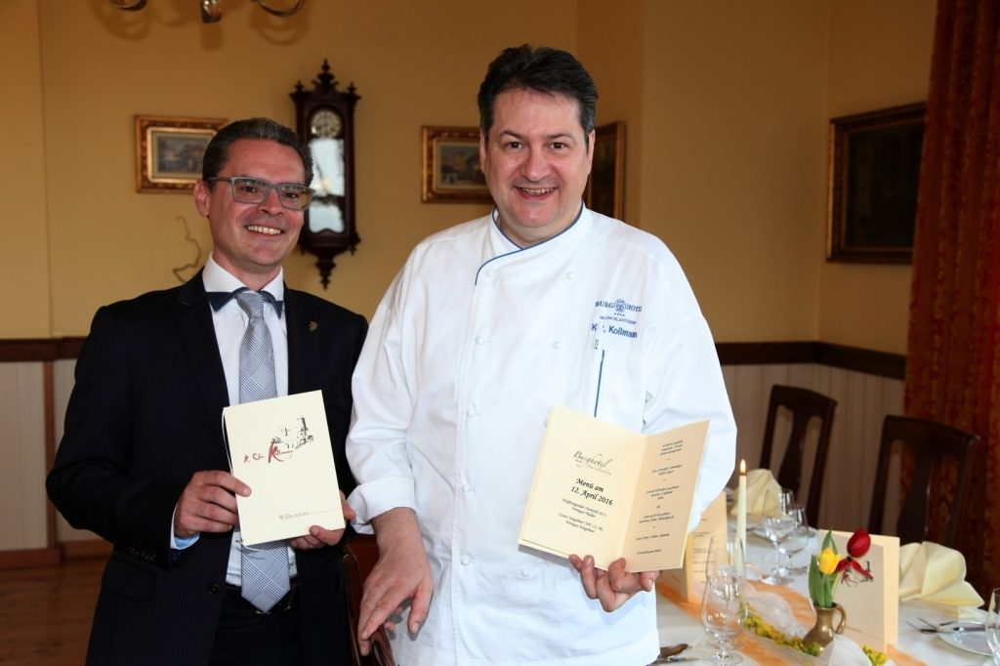
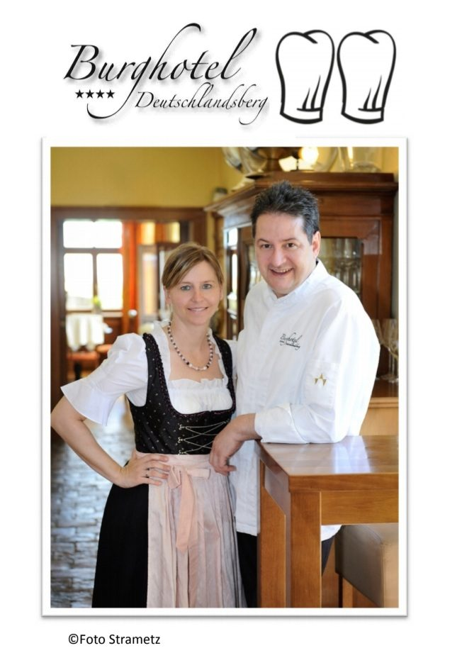
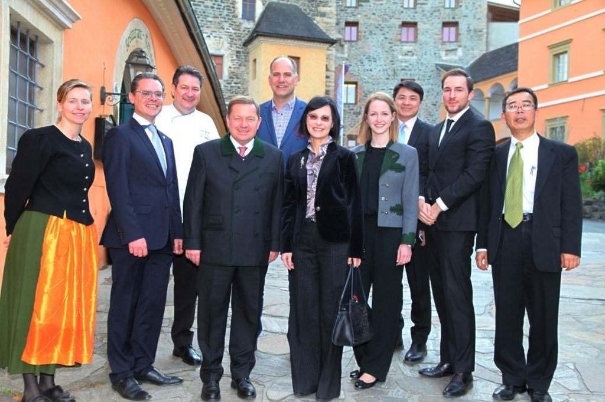

23.08. bis 02.09.2026 geschlossen
In dieser Zeit bleiben Hotel und Restaurant geschlossen. Anfragen beantworten wir danach umgehend.
Burg Landsberg · 8530 Deutschlandsberg · Schilcherland
Vereint mit historischem Charme: In unserem Hotel erholen Sie sich in unterschiedlichen Zimmern und Suiten hoch über der Stadt – im Burgrestaurant verwöhnt Sie unsere Haubenküche.
Aktuelles
In dieser Zeit bleiben Hotel und Restaurant geschlossen. Anfragen beantworten wir danach umgehend.
Unser Burgrestaurant wurde erneut mit zwei Hauben bewertet – eine Bestätigung für Küchenchef Karl Christian Kollmann und sein Team.
Candle-Light-Dinner, Frühstück à la Carte oder Wertgutschein: Gutscheine können Sie von zu Hause aus online bestellen und selbst ausdrucken.
Hotel
In unserem Hotel können Sie sich in unterschiedlichen Zimmern und Suiten vom Alltag erholen. Das Haus zählt 24 Doppelzimmer und 2 Einzelzimmer, darunter drei Suiten mit Whirlpool-Badewanne. Alle Zimmer haben Bad mit Dusche und WC und sind mit Allergiker-Bettwäsche, Minibar, Sat-TV, Safe, Telefon, Fön und LAN-Anschluss ausgestattet.
Vom Burgplatz sind Sie in 10 bis 15 Gehminuten im Zentrum von Deutschlandsberg. Alle Preise verstehen sich pro Zimmer und Nacht inklusive Frühstücksbuffet und Steuern.

Restaurant
Die Burg Landsberg vereint historischen Charme mit einem ausgezeichneten Gourmetrestaurant. Küchenchef Karl Christian Kollmann und sein Team zaubern außergewöhnliche Gaumenfreuden, indem sie die internationale und die österreichische Küche gut zu kombinieren wissen.
Geöffnet ist das Burgrestaurant von Mittwoch bis Samstag, 12.00–14.30 Uhr und 18.00–21.30 Uhr. Sonntag, Montag und Dienstag sind Ruhetage.
Ihre Gastgeber
Ob Kurzurlaub, Hochzeit oder Seminar: Auf der Burg empfängt Sie ein Team, das den Betrieb seit Jahren persönlich führt – vom Empfang über den Service bis in die Küche.

Anlässe
Ob Seminare, Vorträge, Tagungen, Konferenzen, Besprechungen oder Incentives – die Burg Landsberg ist die richtige Adresse, damit Ihre Veranstaltung zum Erfolg wird. Auch bei Familienfeiern bieten wir Ihnen Räumlichkeiten und den passenden Service.
Standesamtliche Trauung im Freien oder im Burgmuseum, Sektempfang, Hochzeitsmenü im Rittersaal – und Feiern bis in die frühen Morgenstunden.
Seminarraum „Liechtenstein“ für bis zu 20 Personen (€ 90,00 pro Tag) und Seminarraum „Burgmuseum“ für bis zu 70 Personen (€ 250,00 pro Tag), jeweils mit Standardtechnik.
Taufen, Geburtstage, Firmungen oder Betriebsfeiern: 40 m² für bis zu 20 Personen, 150 m² für bis zu 100 Personen – dazu die Terrasse mit Blick über Deutschlandsberg.
Burg & Umgebung
Das Burgmuseum ist von 15. April bis 31. Oktober von Dienstag bis Sonntag und an Feiertagen von 10.00 bis 18.00 Uhr geöffnet, letzter Einlass 16.30 Uhr. Führungen sind nach Voranmeldung möglich.
Rundherum warten Flascherlzug Stainz, Jagdmuseum Schloss Stainz, die Hundertwasser-Kirche in Bärnbach, die Ölmühle Hamlitsch und die Schilcher-Weinstraße.

Jetzt buchen
Zimmer und Suiten direkt anfragen, Angebot auswählen oder Gutschein bestellen – ohne Umweg über fremde Portale.